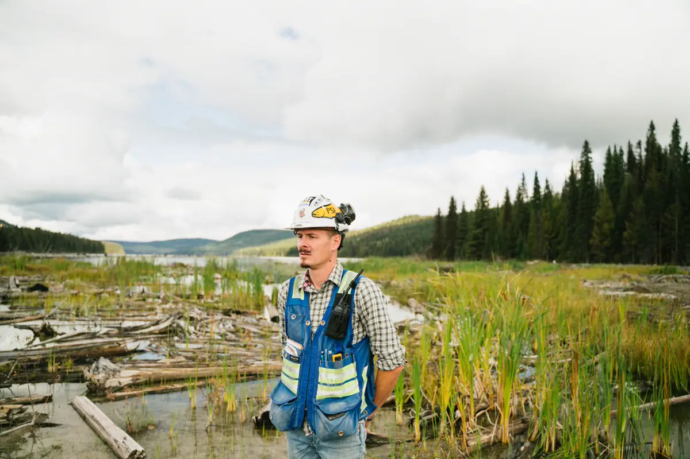
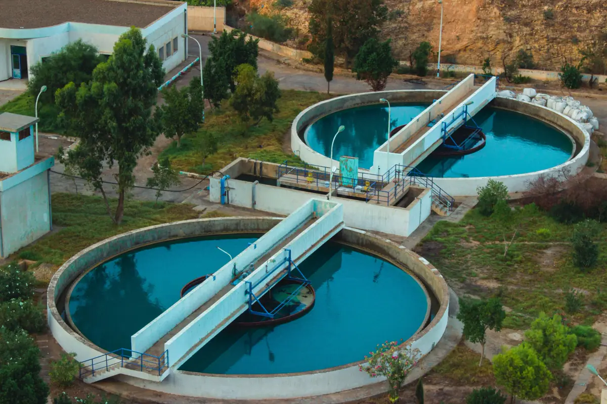
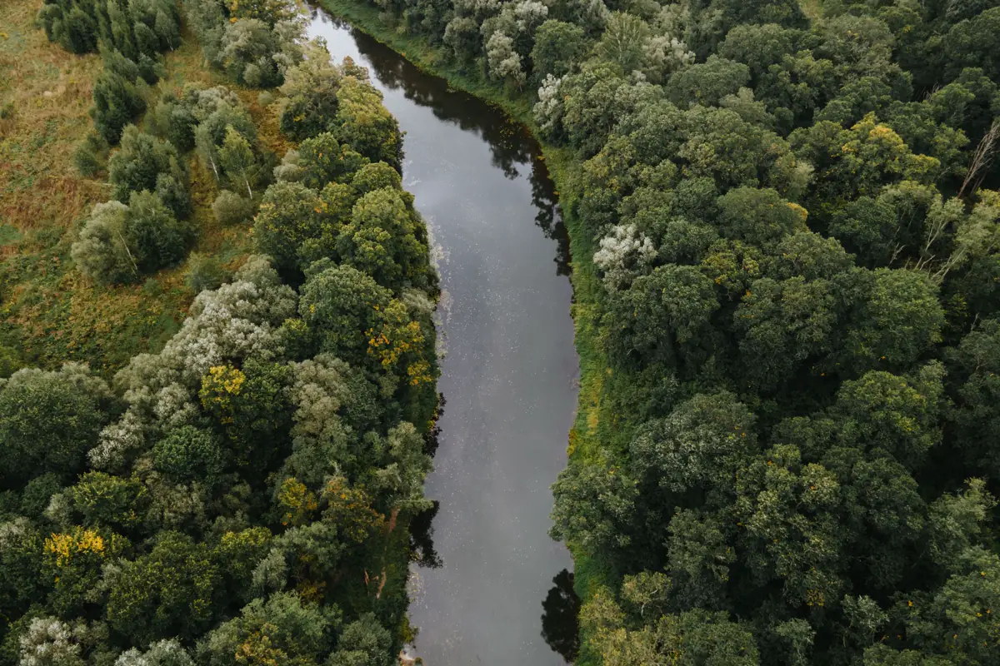

Quem licencia: IEMA ou prefeitura
No Espírito Santo, o licenciamento é organizado pelo Decreto 4.039-R/2016, que define as licenças — prévia, de instalação, de operação, a licença ambiental única e a licença por adesão e compromisso. A Resolução CONSEMA 01/2022 lista as atividades de impacto local, licenciadas pelos municípios que têm estrutura para isso, como Vitória, Vila Velha, Serra e Cariacica. O que não é de impacto local fica com o IEMA.
O primeiro serviço é sempre o enquadramento: atividade, porte e potencial poluidor definem quem licencia, qual licença cabe e se a atividade pode ser dispensada — pedido que hoje também passa pelo Iema Digital.
Equipe técnica pronta para atender toda a demanda em Vitória, Vila Velha, Serra, Cariacica e região: o orçamento, o agendamento e o acompanhamento ficam centralizados na Axial Engenharia, do primeiro contato à entrega do documento.

Documentos técnicos mais pedidos
| Documento | Quando aparece |
|---|---|
| Relatório de Controle Ambiental (RCA) | Atividades de médio porte e potencial poluidor, conforme o enquadramento |
| Plano de Gerenciamento de Resíduos Sólidos | Indústria, comércio e serviços que geram resíduo perigoso ou em volume |
| Plano de resíduos da construção civil | Obras, conforme a Resolução CONAMA 307/2002 |
| Projeto de tratamento de efluentes | Lava-jato, oficina, indústria de alimentos, posto |
| Outorga ou certidão de uso insignificante | Captação de poço ou de curso d'água — AGERH |
| Relatórios de condicionantes | Durante toda a validade da licença |

Poço artesiano também precisa de autorização
Captar água de poço sem outorga ou sem certidão de uso insignificante da AGERH é irregular — o prazo para simples cadastro de poços antigos acabou em 2020. Em área urbana com rede pública, o uso para consumo humano tem restrições adicionais. Condomínios e indústrias que usam poço para lavagem, irrigação ou processo precisam regularizar a captação, e a análise técnica define o pedido certo.

Licença ambiental, galpão e alvará andam juntos
Quem vai construir um galpão ou instalar uma linha industrial precisa da licença de instalação antes da obra e da licença de operação antes de produzir. O alvará do Corpo de Bombeiros e a regularização da construção correm em paralelo, e um atraso em qualquer um deles segura o alvará de funcionamento.
Perguntas frequentes sobre licenciamento ambiental
Minha atividade precisa de licença ambiental?
Depende do enquadramento: atividade, porte e potencial poluidor. Muitas atividades de baixo impacto podem ser dispensadas, mas a dispensa também é um ato formal, pedido ao órgão competente.
Quem emite a licença: o IEMA ou a prefeitura?
Atividades de impacto local listadas na Resolução CONSEMA 01/2022 são licenciadas pelos municípios habilitados, como Vitória, Vila Velha, Serra e Cariacica. As demais ficam com o IEMA.
Quanto tempo leva para sair a licença?
Depende do tipo de licença, da qualidade dos estudos e das exigências do órgão. Licenças simplificadas e dispensas saem mais rápido; licenças de empreendimento maior levam meses, por isso o enquadramento deve começar antes da obra.
Preciso de outorga para usar poço?
Sim. A captação de água subterrânea precisa de outorga ou de certidão de uso insignificante da AGERH, conforme o volume. O prazo de simples cadastro de poços antigos terminou em 2020.
O que são condicionantes da licença?
São obrigações fixadas na licença — monitoramentos, relatórios, controles e prazos — que precisam ser cumpridas durante toda a validade. O descumprimento pode suspender a licença e gerar multa.
Licenciamento ambiental na Grande Vitória
Apoio técnico para licenciar indústrias, galpões, comércios e obras:
Vai abrir, ampliar ou regularizar uma atividade?
Informe a atividade, o porte e o município. Retornamos com o enquadramento provável e o caminho.